Hướng Dẫn Lấy API Key Từ ZaloAI
- Truy cập: https://zalo.ai/ 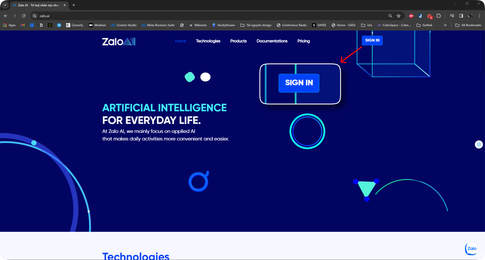
- Đăng nhập bằng tài khoản Zalo của bạn. 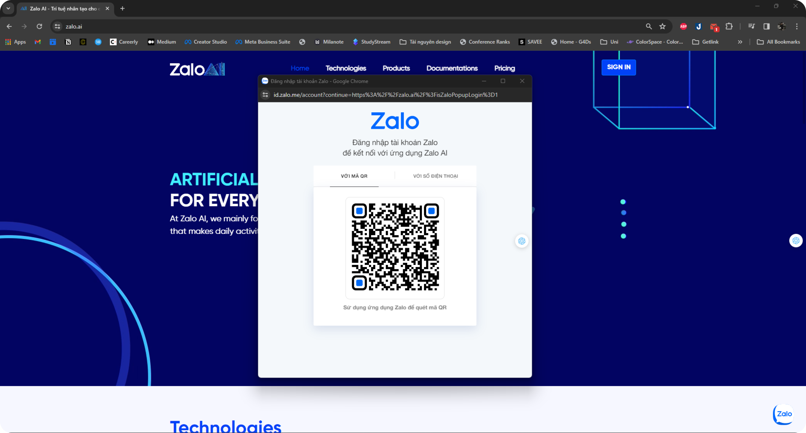
- Truy cập: https://zalo.ai/account/manage-keys và chọn 'Create new key'. 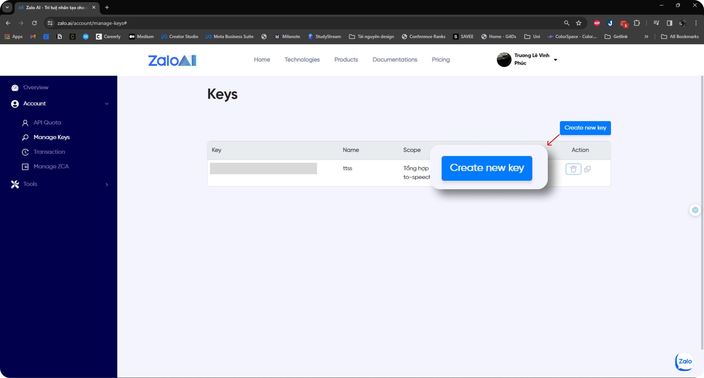
- Đặt tên gợi nhớ và chọn Liveness. 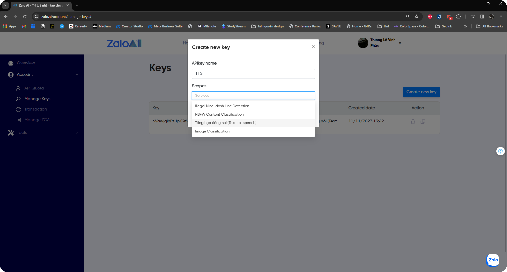
Hướng Dẫn Lấy API Key Từ FPTAI
- Truy cập: https://fpt.ai/vi 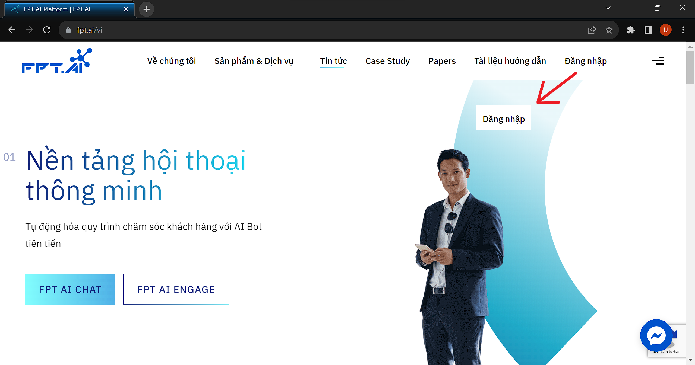
- Đăng nhập bằng tài khoản FPT của bạn. 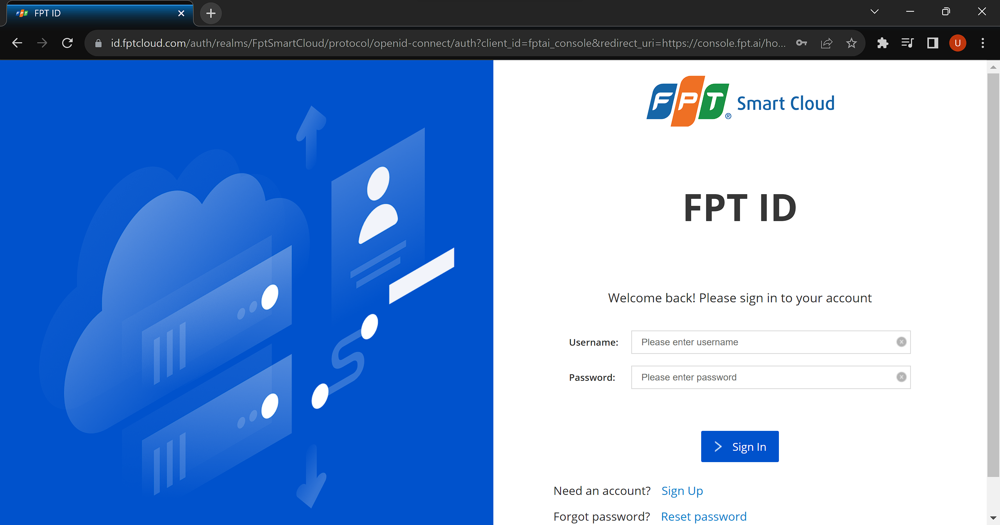
- Sau khi đăng nhập màn hình sẽ hiển thị như sau, ấn mở Text to Speech 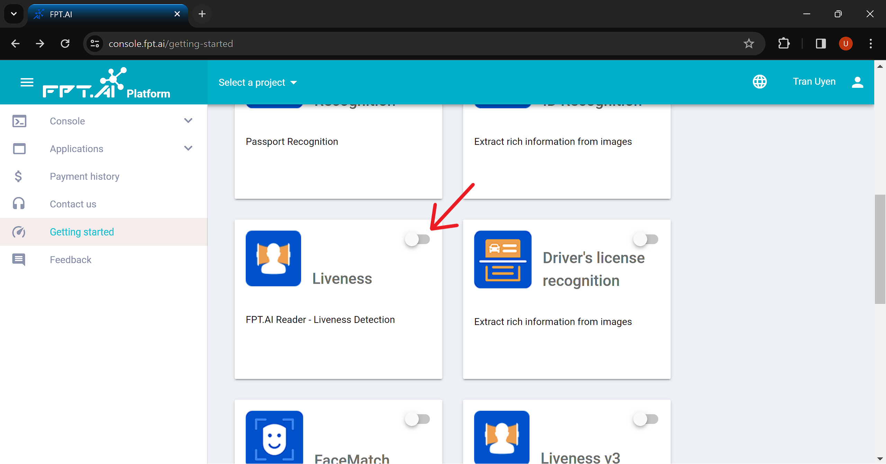
- Chọn CONFIRM 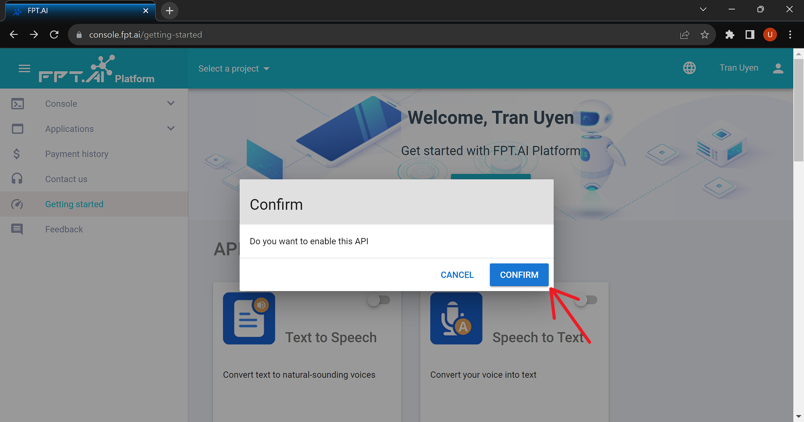
- Đặt tên dự án và chọn CREATE 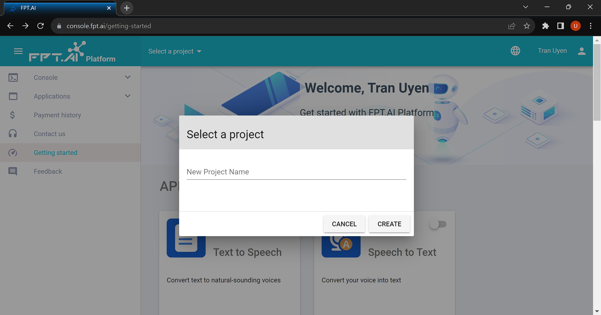
- Đặt tên Key và chọn CREATE 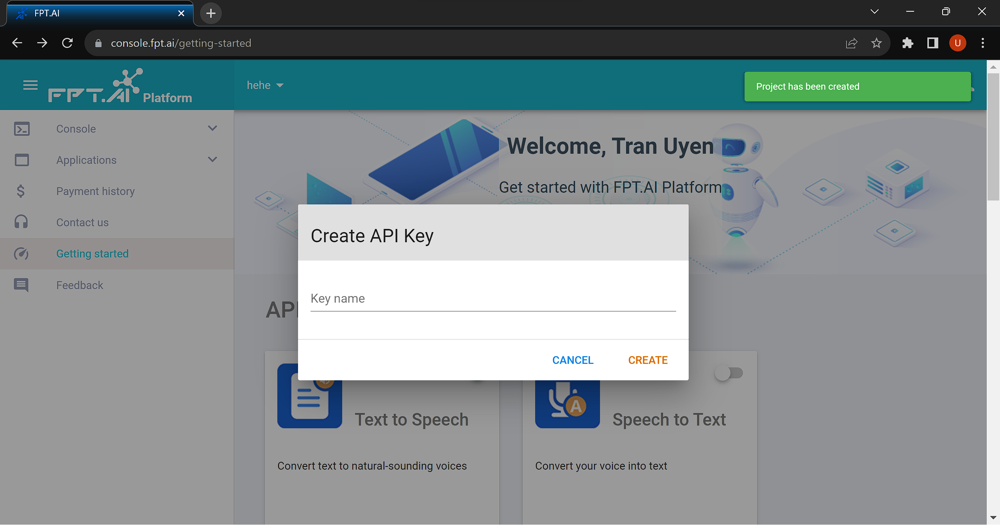
- Màn hình sẽ hiển thị như sau. Chọn API Keys 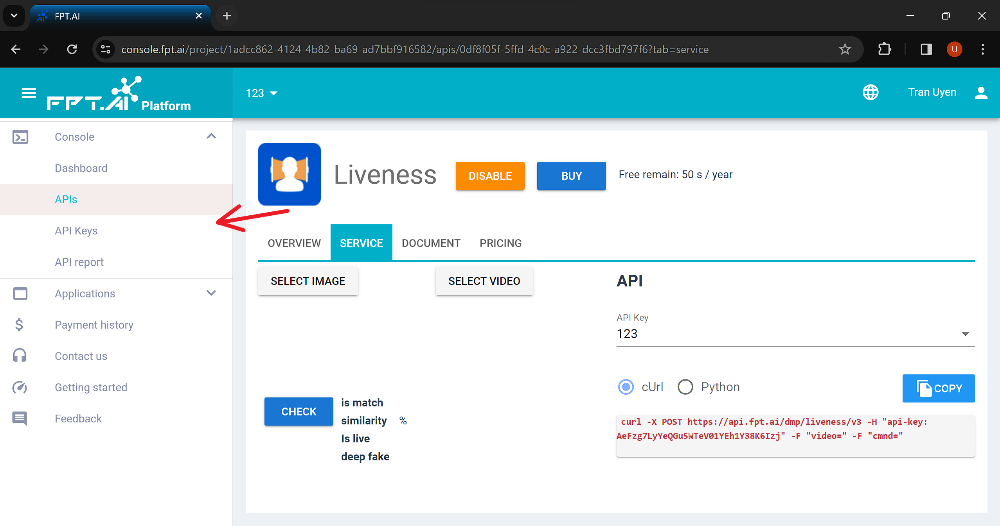
- Chọn sao chép Key và sử dụng 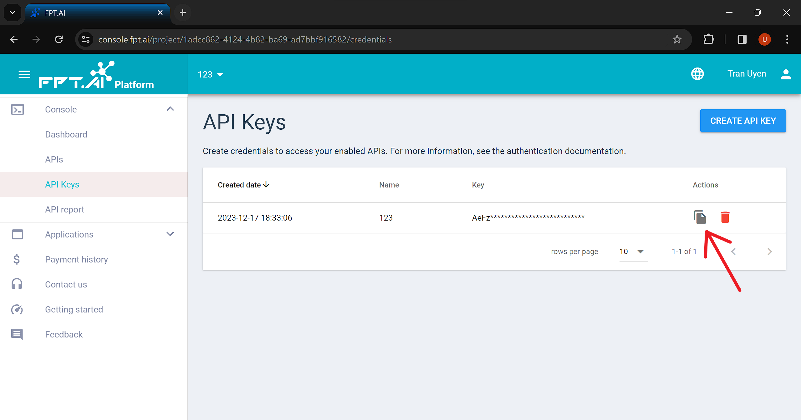